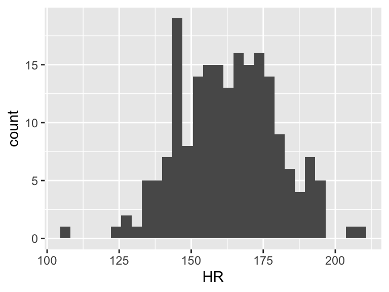
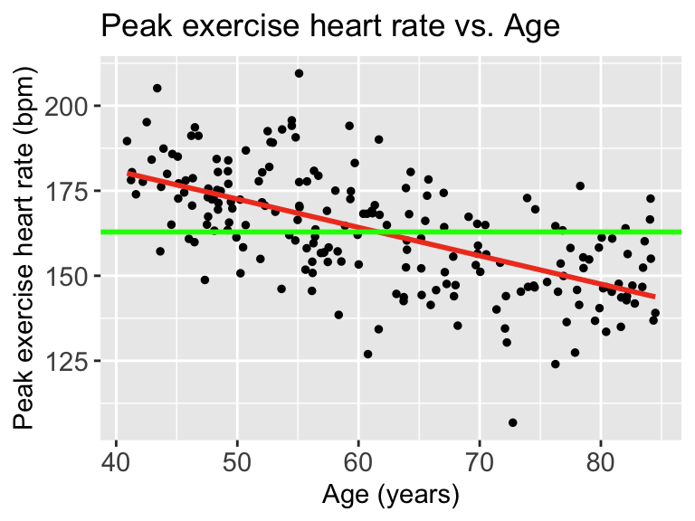

set.seed(444) # Set the seed so that every time I run this I get the same results
x = runif(n=200, min = 40, max = 85) # I am sampling 200 points from a uniform distribution with minimum value 40 and maximum value 85
y = rnorm(n=200, 215 - 0.85*x, 13) # Then I can construct my y-observations based on x. Notice that 215 is the true, underlying intercept and -0.85 is the true underlying slope
df = data.frame(Age = x, HR = y) # Then I combine these into a dataframeMuddy Points
Lesson 10: MLR: Using the F-test
Muddy Points from Winter 2025
Muddy Points from Winter 2024
1. We keep getting back to \(\widehat{Y}\), \(Y_i\), and \(\overline{Y}\) and their relationship to the population parameter estimates. Can you clarify this?
I think it’ll be helpful to use the dataset I created from our quiz. I still think this relationship is best communicated with simple linear regression. What you didn’t see on the quiz was that I simulated the data:
Then we can look at the scatterplot:
library(ggplot2)
ggplot(df, aes(x = x, y = y)) +
geom_point(size = 1) +
geom_smooth(method = "lm", se = FALSE, linewidth = 1, colour="#F14124") +
labs(x = "Age (years)",
y = "Peak exercise heart rate (bpm)",
title = "Peak exercise heart rate vs. Age") +
theme(axis.title = element_text(size = 11),
axis.text = element_text(size = 11),
title = element_text(size = 11))
Each point represents an observation \((X_i, Y_i)\). That is where we get \(Y_i\) from
The red line represents \(\widehat{Y}\). We can look at each \(\widehat{Y}|X\), so we look at the expected \(Y\) at a specific age like 70 years old.
Now we need to find \(\overline{Y}\). This does not take \(X\) into account. So we can look at the observed \(Y\)’s and find the mean
ggplot(df, aes(HR)) + geom_histogram()
mean(df$HR)[1] 162.8725
Then we can draw a line on the scatterplot for \(\overline{Y}\):
ggplot(df, aes(x = x, y = y)) +
geom_point(size = 1) +
geom_smooth(method = "lm", se = FALSE, linewidth = 1, colour="#F14124") +
labs(x = "Age (years)",
y = "Peak exercise heart rate (bpm)",
title = "Peak exercise heart rate vs. Age") +
theme(axis.title = element_text(size = 11),
axis.text = element_text(size = 11),
title = element_text(size = 11)) +
geom_hline(yintercept = mean(df$HR), linewidth = 1, colour="green")
When we talk about SSY (total variation), we can think of the histogram of the Y’s
ggplot(df, aes(HR)) + geom_histogram() + xlim(100, 225)
Then the total variation of these observed values is related to the \(\sum_{i=1}^n (Y_i - \overline{Y})^2\). Let’s plot \(Y_i - \overline{Y}\):
df = df %>% mutate(y_center = HR - mean(HR))
ggplot(df, aes(y_center)) + geom_histogram() + xlim(-60, 50)+ylim(0, 35)
However, we can fit a regression line to show the relationship between Y and X. For every observation \(X_i\) there is a specific \(\widehat{Y}\) from the regression line. So if we take the difference between the mean Y and the fitted Y, then we get the variation that is explained by the regression.
mod1 = lm(HR ~ Age, data = df)
aug1 = augment(mod1)
df = df %>% mutate(fitted_y = aug1$.fitted,
diff_mean_fit = fitted_y - mean(HR))
ggplot(df, aes(diff_mean_fit)) + geom_histogram() + xlim(-60, 50)+ylim(0, 35)
In the plot above, there is variation! And it means that some of the variation in the plot of Y alone is actually coming from this variation explained by the regression model!!
But there is left over variation that is not explained by the model… What is that? It’s related to our residuals: \(\widehat\epsilon_i = Y_i - \widehat{Y}_i\)
So we’ll calculate the residuals (or more appropriately, use the calculation of the residuals that R gave us)
mod1 = lm(HR ~ Age, data = df)
aug1 = augment(mod1)
df = df %>% mutate(diff_y_fitted = aug1$.resid)
ggplot(df, aes(diff_y_fitted)) + geom_histogram() + xlim(-60, 50) +ylim(0, 35)
Our aim in regression (through ordinary least squares) is to minimize the variance in the above plot. The more variance our model can explain, the less variance in the residuals. In SLR, we can only explain so much variance with a single predictor. As we include more predictors in our model, the model has the opportunity to explain even MORE variance.
2. I feel that I am understanding and beginning to memorize the “processes” but failing to understand the “how/when/why” we apply certain models. Like, if you let me loose into the world tomorrow, I feel I would not be able to implement anything that I have learned thus far out in the wild.
I feel you. Today was meant to establish the tools and the process for the hypothesis tests. In the next few classes we are going to shape the how/when/why. There’s so many that we can’t cover them in one class. So I thought it would be best to introduce the tools on their own, and then discuss how we use each one.
3. I’m struggling with how to use the SSE, SSR, and SSY graphs but I think I just need to spend more time with them.
We’re going to keep talking about this! I think I have a good visual explanation that will help us connect some ideas!
4. Using R to conduct each F-test
I show this a little bit for the overall test, but let’s explicitly write it out for the example with the group of covariates.
Let’s say our proposed model is:
\[\text{LE} = \beta_0 + \beta_1 \text{FLR} + \beta_2 \text{FS} + \beta_3 WS + \epsilon\]
And we want to see if it fits the data significantly better than:
\[LE = \beta_0 + \beta_1 FLR + \epsilon\]
We need to fit both models first:
# Reduced model
mod_red3 = lm(LifeExpectancyYrs ~ FemaleLiteracyRate, data = gapm_sub2)
# Full model
mod_full3 = lm(LifeExpectancyYrs ~ FemaleLiteracyRate + FoodSupplykcPPD + WaterSourcePrct,
data = gapm_sub2)And then all we need to do is call each model into the anova() function! The order of the models in the function will not matter for the F-test.
anova(mod_red3, mod_full3) %>% tidy() %>% gt() %>% fmt_number(decimals = 2)| term | df.residual | rss | df | sumsq | statistic | p.value |
|---|---|---|---|---|---|---|
| LifeExpectancyYrs ~ FemaleLiteracyRate | 70.00 | 2,654.87 | NA | NA | NA | NA |
| LifeExpectancyYrs ~ FemaleLiteracyRate + FoodSupplykcPPD + WaterSourcePrct | 68.00 | 1,517.92 | 2.00 | 1,136.96 | 25.47 | 0.00 |
And then we have all the information we need for our conclusion! Because the statistic is 25.47 and its corresponding p-value < 0.001, we reject the null!
5. Calculating the F-statistic
We will not need to know exactly how to calculate the F-statistic! We just need to understand the context of the calculation. With that poll everywhere question, I just wanted you to have a moment to interact with the fact the the F-test is measuring the difference in the sum of squares of the error.
6. Why is SSE of the reduced model always greater than or equal to SSE of the full model?
The more variables that we have in the model, the more variation in our outcome we can explain. The worst case scenario is that the added variable does not help explain variation, then we are left with the same SSE as a model without the variable. If the variable add any information about our outcome, then we decrease the SSE.
7. How many variables would be too many to include in MLR? What if they all help explain the regression?
What a fun question! The maximum number of variables that you can have in a model is the number of observations that you have. At that point, you can have a variable that is an indicator of each observation. Basically, a singular mapping from each individual observation to its respective outcome.
And this will explain the variation in Y perfectly!! But it won’t illuminate useful information. We cannot generalize it to the population. So with the number of variables that we include in the model, we need to balance generalizability and reduction of error.